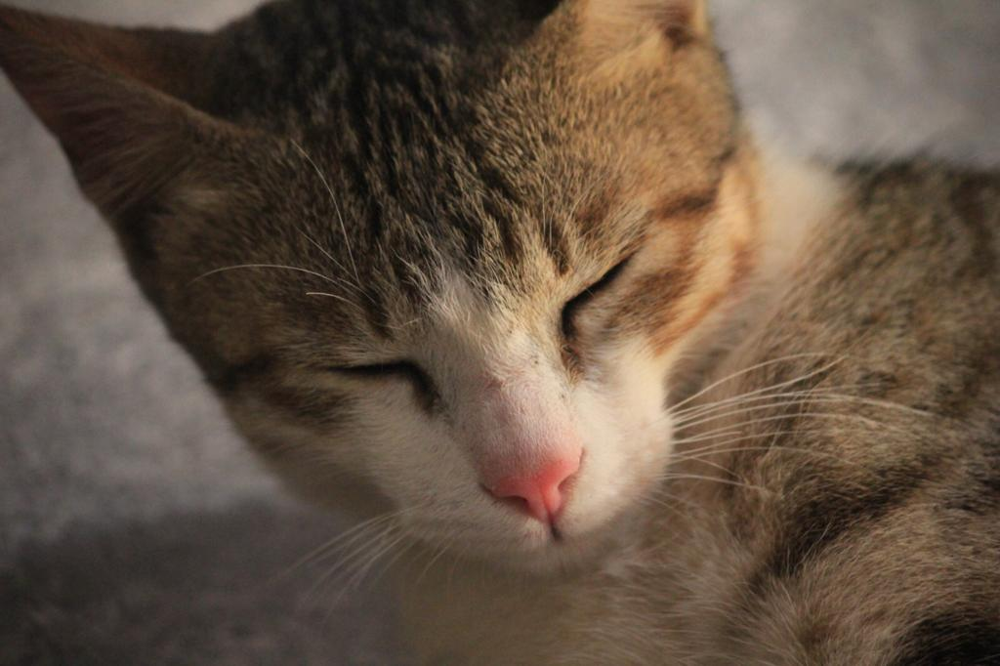
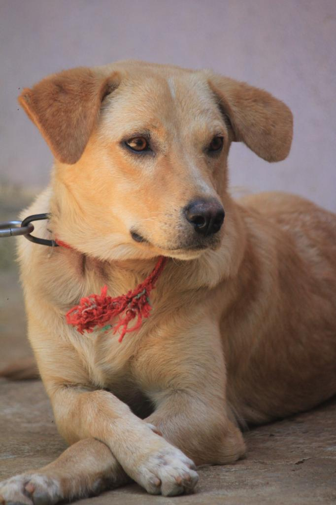

Subbi, my beloved cat, is the heart of our home with her playful antics and affectionate purrs. Her sleek, silvery fur glistens in the sunlight as she gracefully leaps from one perch to another, chasing imaginary prey. With her bright, emerald eyes that seem to hold the wisdom of the ages, she often curls up on my lap, providing a sense of comfort and companionship. Every morning, she greets me with gentle nudges and soft meows, demanding her favorite treats. Whiskers has a knack for turning even the most mundane moments into cherished memories, reminding me daily of the simple joys of life.
Subbi is irresistibly adorable with her tiny pink nose and fluffy, rounded paws. When she rolls onto her back, revealing her soft, white belly, it's impossible not to melt at the sight. Her playful antics, like chasing her own tail or pouncing on a feather toy, are endlessly entertaining. The way she curls up into a perfect little ball when she sleeps, with her tail tucked under her chin, makes her look like a plush toy come to life.
Sonu, my beloved pet dog, is a delightful mixed breed who brings immense joy and companionship to my life. His unique appearance, a charming blend of various breeds, makes him stand out wherever we go. Sonu is not just a pet; he is a loyal friend and a constant source of happiness. His playful nature and boundless energy ensure that there's never a dull moment around him. Whether he's chasing his favorite toy or curling up beside me, Sonu's presence is a comforting and heartwarming addition to my daily routine. His affectionate demeanor and unwavering loyalty make him an irreplaceable part of my family.
Sonu's playful energy and affectionate nature are among the many things we cherish about him. His unique mixed breed appearance gives him a distinct charm that never fails to bring smiles. We adore his loyalty and the way he always seems to know when we need comfort or a bit of cheer. Sonu's boundless curiosity and enthusiasm for life are infectious, reminding us to find joy in the little things. Most of all, we treasure the unconditional love he showers upon us, making every day brighter.